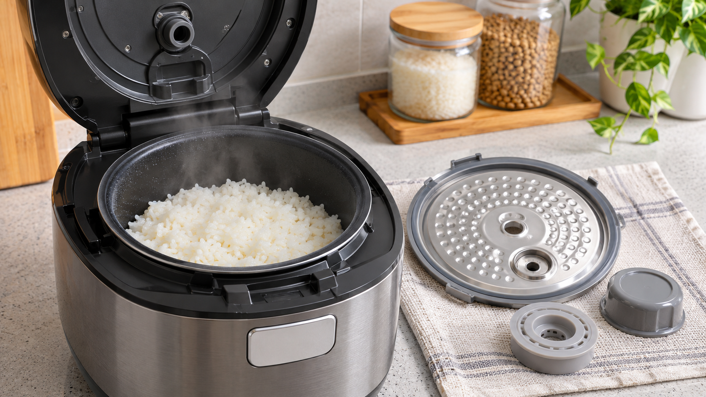

보온 중 밥이 빨리 누렇게 되거나 냄새가 나면 장시간 보온만 탓하기 전에 내솥·뚜껑·증기 통로의 잔여물과 보온 설정을 확인하세요. 쉰 냄새가 강하거나 밥이 끈적하게 변했다면 섭취하지 않는 편이 안전합니다.
본체 내부에 물을 붓거나 센서를 긁거나 패킹을 임의로 늘이지 마세요.
취사 직후부터 냄새가 나거나 보온 온도가 지나치게 낮거나 높은 증상이 반복되면 모델명과 보온 시간을 기록해 점검받으세요. 밥이 설익을 때 점검법과 증기 누출 해결법도 참고하세요.
패킹 세척·교체와 보온 온도는 제조사 사용설명서를 따르세요.